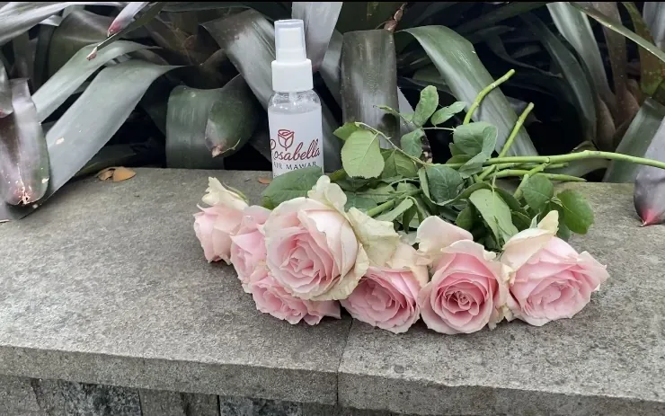
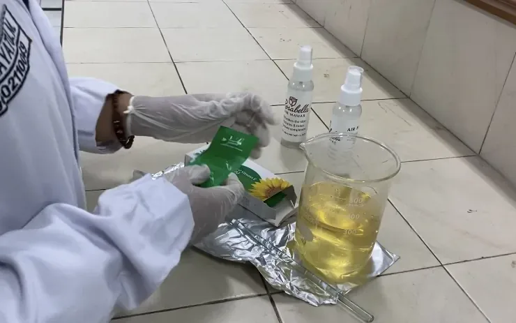
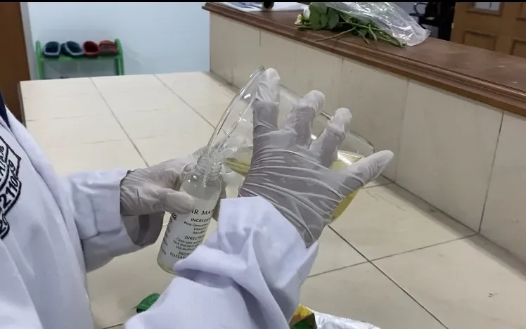
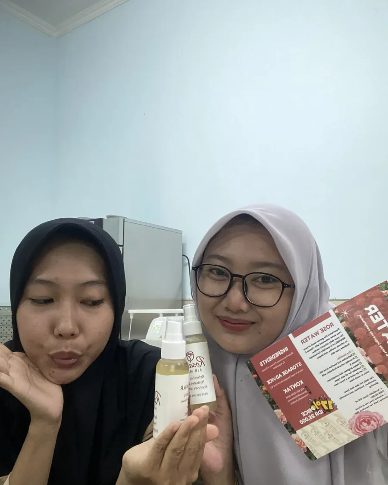

Latar & tujuan
Produk penyegar wajah (face mist) berbasis air mawar banyak beredar dengan kandungan alkohol sebagai pelarut dan pengawet. Alkohol memberi sensasi cepat kering, tetapi dapat menyebabkan iritasi pada kulit sensitif. Proyek ini merancang alternatif tanpa alkohol dengan pendekatan ekstraksi dan distilasi mawar.
Fokusnya ada dua: memastikan proses ekstraksi menghasilkan air mawar yang stabil, dan memastikan produk yang dihasilkan layak secara sensori maupun komersial.
Metode
- Distilasi — ekstraksi minyak dan air mawar melalui pemanasan terkontrol untuk memperoleh distilat.
- Formulasi — penyusunan komposisi produk tanpa alkohol, dengan penyesuaian pH dan bahan pendukung stabilitas.
- Uji organoleptik — penilaian warna, aroma, dan sensasi pada kulit oleh panel.
- Uji stabilitas — pengamatan produk pada periode penyimpanan untuk mendeteksi pemisahan fase, perubahan warna, atau aroma.
- Kemasan & pemasaran — perancangan identitas produk dan strategi pemasaran berbasis kewirausahaan.
Hasil
Produk berhasil diformulasikan tanpa alkohol dengan basis distilat mawar, dan lolos uji organoleptik pada aspek aroma serta sensasi pemakaian. Uji stabilitas menjadi bagian paling menentukan: tanpa alkohol, sistem pengawet dan keseimbangan pH harus dirancang lebih hati-hati agar produk tidak mudah terkontaminasi maupun berubah warna selama penyimpanan.
Galeri produk



